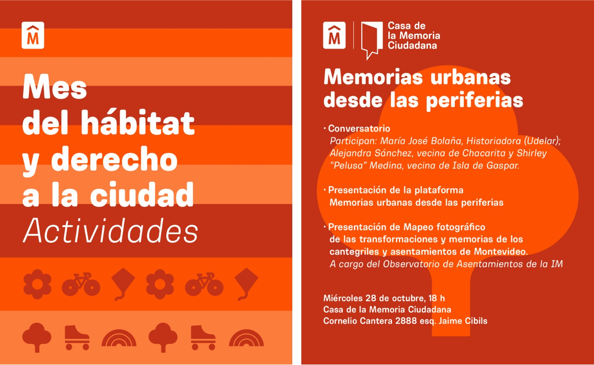
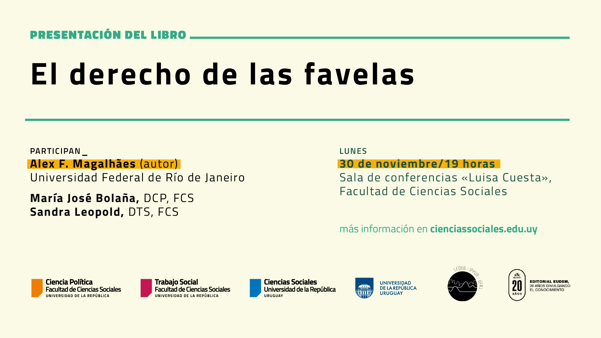
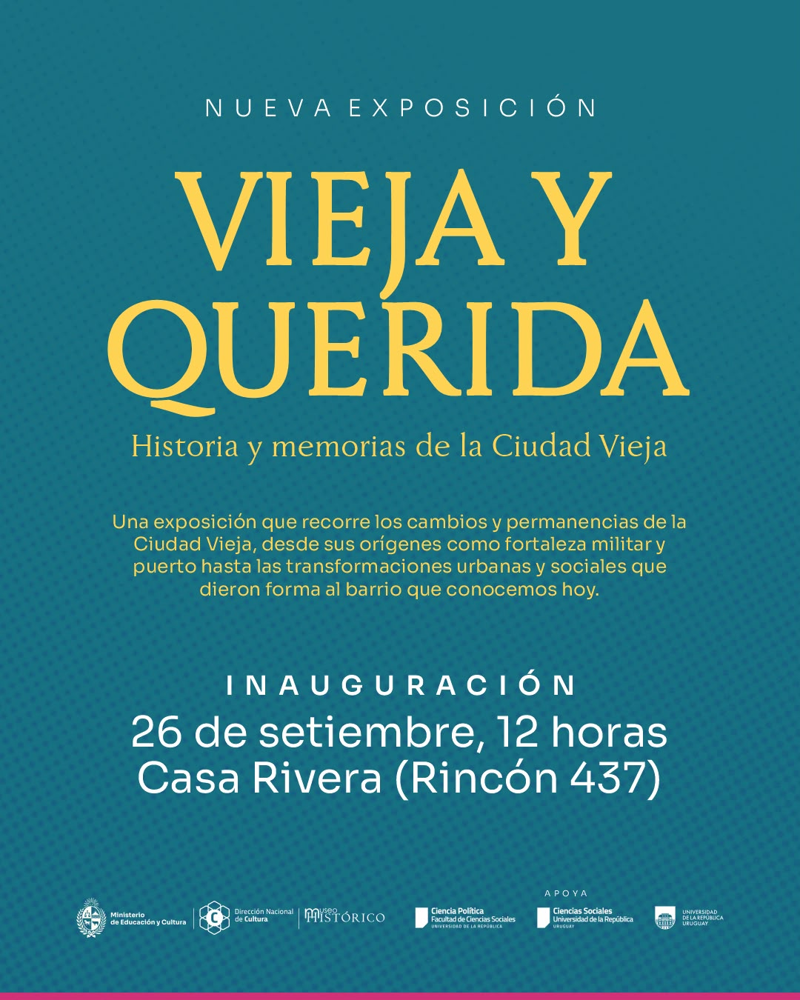
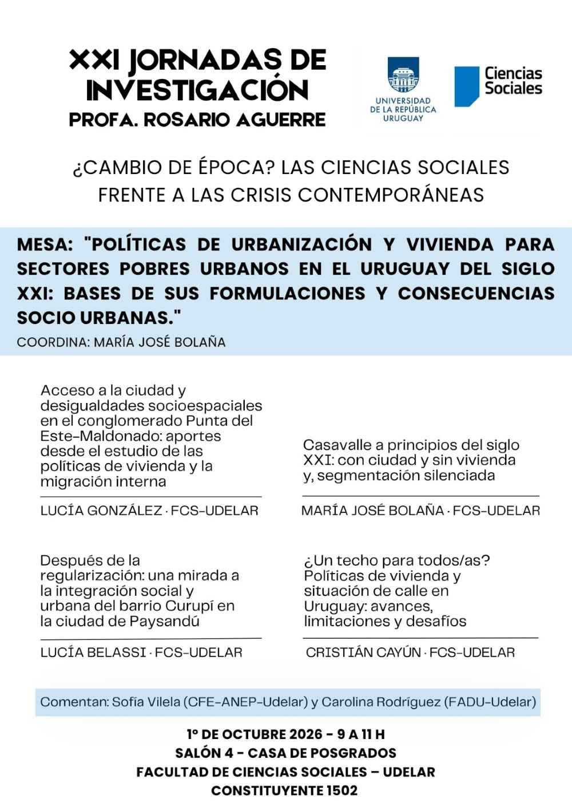

Casa de la memoria ciudadana, Montevideo.

Facultad de Ciencias Sociales, Universidad de la República, Montevideo.

Museo Histórico Nacional, Casa de Rivera, Montevideo.

Facultad de Ciencias Sociales-Udelar.
Centro Cívico Luisa Cuesta, Montevideo.